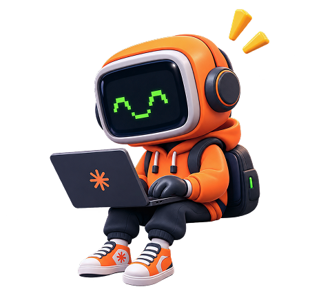
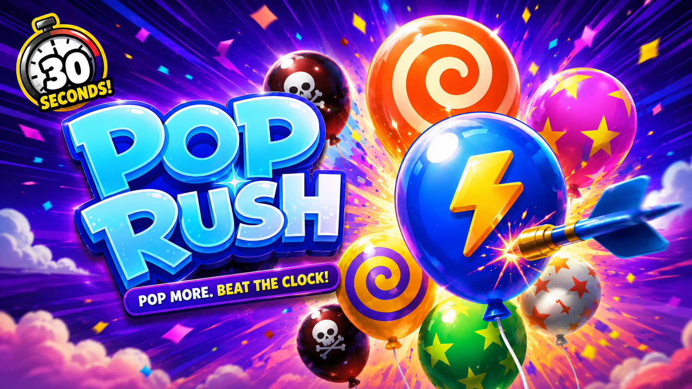

01

Ten years designing. Most of it for products people open when they want to be entertained. The rest of the time I'm the audience.
01 — Work
Everything else
Earlier products, film, in-product motion, and two things that play.
3
The moving half
Hover to hold
2 · run inline

02 — Experience · 2016 → 2026
Same person, better kit. Four stops, forward — so the timeline lands on now instead of receding from it.
2016 — 17
Designer
Banners and creatives, a year after teaching myself the tools. The first job that paid for design.
+ Acquired mouse
2017 — 18
UI designer across ecommerce, healthcare and B2B. Enough different problems in one year to stop guessing.
UI designer
+ Acquired tablet
2018 — 21
First designer → design lead
Employee-designer number one. Built the team to ten and shipped Skillclash from nothing.
+ Acquired full kit · crown
2021 — now
Senior PD → Lead PD
Wynk, Gaming, the motion pod, IPTV. 2023 was a thin year; 2024 is when the motion practice started paying for itself.
+ Acquired dual monitors
+ 2024 — Acquired motion tool
And that's where you came in.
Fades up during the table rotation, not after it.